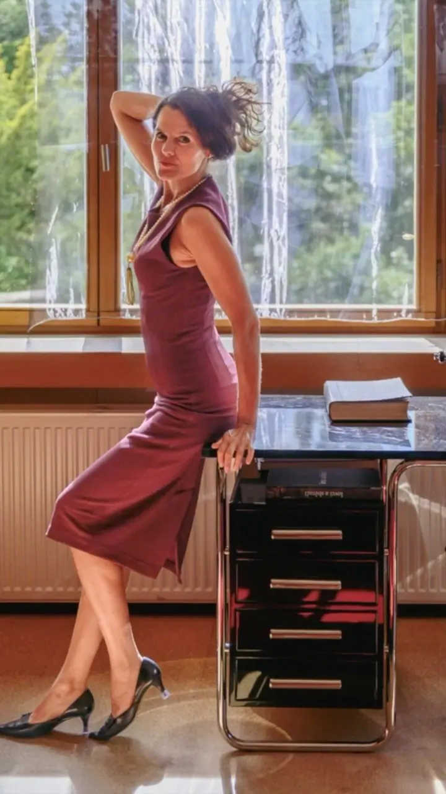
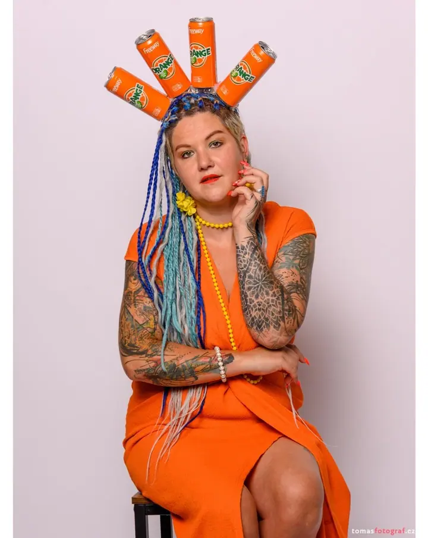
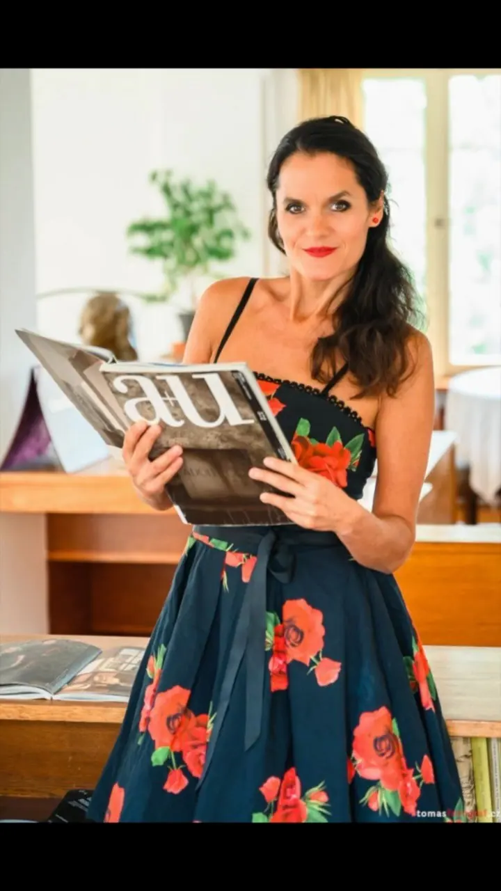
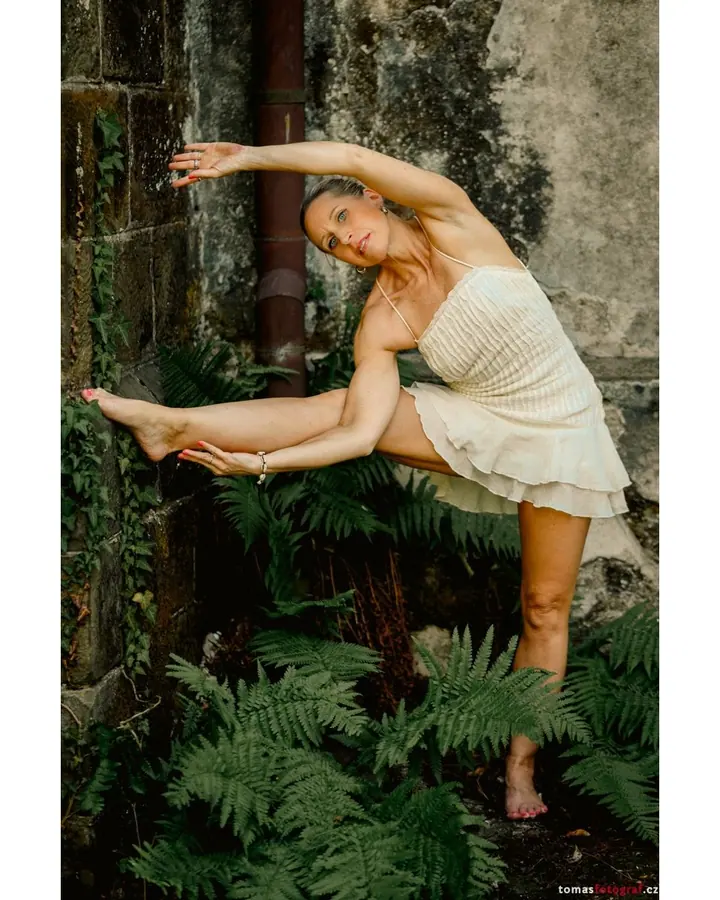
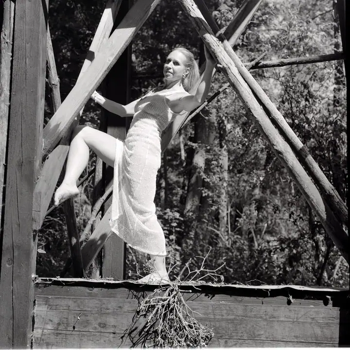
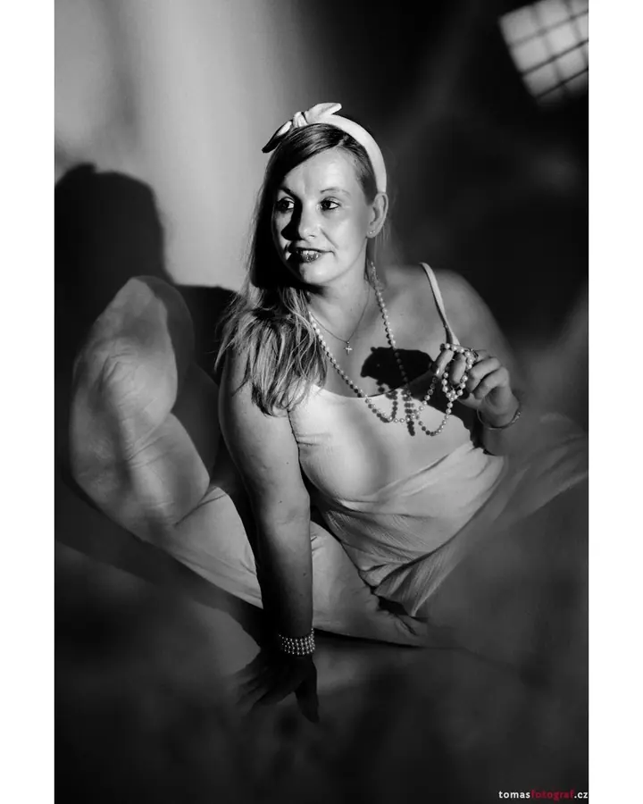
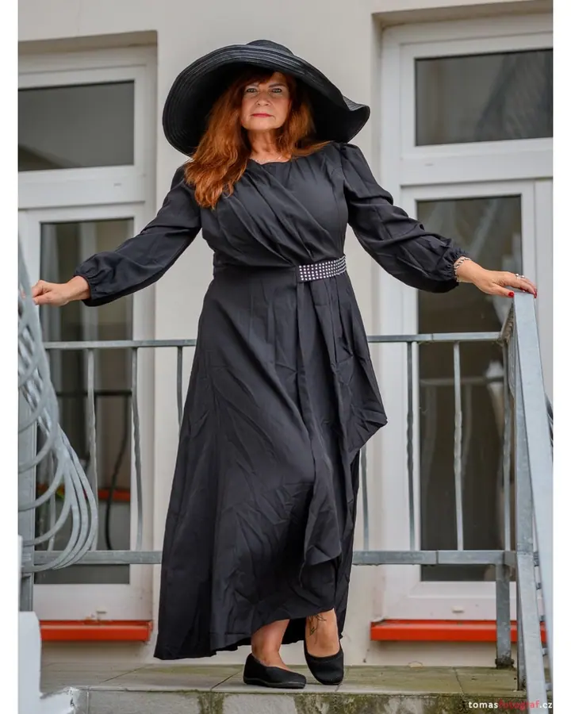
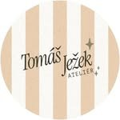

01 / 04
Portrétní focení pro ženy
Ateliérové portréty pro ženy v mém fotoateliéru v Mělníku, s retro rekvizitami nebo venku. Bez přetvářky, s citem a s úsměvem, balíčky od 3 000 Kč.
Zeptat se na termín→






Fotím opravdové příběhy
Zeptat se na termín →(01) Ahoj
Jmenuji se Tomáš Ježek a jsem fotograf z Mělníka. Ve svém ateliéru fotím hlavně portréty žen, ráda vás ale vezmu i ven nebo k focení na film. Nefotím na výkon, ale v přítomném okamžiku , s respektem k vám a vašemu příběhu.
513lidí sleduje mou práci na Instagramu
242příspěvků s fotkami a příběhy
(02) Co fotím
01 / 04
Ateliérové portréty pro ženy v mém fotoateliéru v Mělníku, s retro rekvizitami nebo venku. Bez přetvářky, s citem a s úsměvem, balíčky od 3 000 Kč.
Zeptat se na termín→Dále nabízím
Svatby fotím sám a nenápadně. Spojuji reportážní styl s jemnými portréty a na přání přidám i analogové snímky.
↗Business portréty pro firmy i osobní prezentaci a reportáže z firemních akcí, konferencí, přednášek, koncertů a výstav.
↗Analogové focení na černobílý, barevný nebo retro film. Samostatně za 4 500 Kč, nebo jako doplněk k portrétu či svatbě od 2 000 Kč.
↗(04) Postup
Od první zprávy po hotovou galerii.
Krok 1 z 4
Domluvíme se a popovídáme si o vašich představách, třeba u kávy. Klidně vás vyzvednu.
Krok 2 z 4
V dobré náladě se přesuneme do ateliéru v Mělníku, nebo vyrazíme na místo venku, které vybereme spolu.
Krok 3 z 4
Povedu vás krok za krokem, ale nechám vám prostor být sama sebou. Nefotíme pod tlakem.
Krok 4 z 4
Profesionálně upravené fotky dostanete do 4 týdnů v online galerii nebo na flash disku.
Fotoaparát je jen nástroj, důležité se děje před objektivem.
(05) Za objektivem
Jsem původně z Prahy a od roku 2011 žiji v Brandýse nad Labem. Fotografie je součástí mého života už od roku 1985, kdy jsem si za první brigádu koupil ruský Zenit a černobílé fotky vyvolával doma v koupelně. Vystudoval jsem elektrotechniku na ČVUT, ale mou skutečnou vášní se stala fotka.
Na digitál jsem přešel v roce 2007, filmu ale zůstávám věrný dodnes. Kurz u fotografa Miroslava Sanytráka mi otevřel nové obzory v komunikaci s lidmi a práci s emocemi. Jsem členem Fotoklubu Praha a v roce 2023 jsem si z bývalé kanceláře vybudoval vlastní ateliér v Mělníku.
Kromě focení jsem překladatel, cyklista a muzikant a rád jezdím na výlety a koncerty. Nejsem typ, který by se chlubil vybavením. Fotoaparát je jen nástroj, to důležité se děje před objektivem.

Tomáš
Tomáš Ježek · Portrétní a svatební fotograf
Basic za 3 000 Kč zahrnuje hodinu focení a 10 upravených fotek, Comfort za 5 000 Kč dvě hodiny a 20 fotek. Deluxe za 12 000 Kč nabízí tři hodiny, 35 fotek a vizážistku v ceně.
Vůbec ne. Celým focením vás povedu, dám jednoduché pokyny a zároveň nechám věci plynout. Všechno má svůj čas.
Ano. Pracuji s filmy Ilford, Wolfen a Kodak, černobílými i barevnými. Analog si můžete dopřát samostatně, nebo jako doplněk k portrétu či svatbě.
Nejdřív se potkáme osobně nebo online a probereme harmonogram a lokace. V den svatby fotím sám a nenápadně, a když je potřeba, pomůžu se skupinovými fotkami nebo s pózou.
(07) Kontakt
Napište pár vět o tom, co si představujete, a termín, který se vám hodí.
tomasj@tomasfotograf.cz